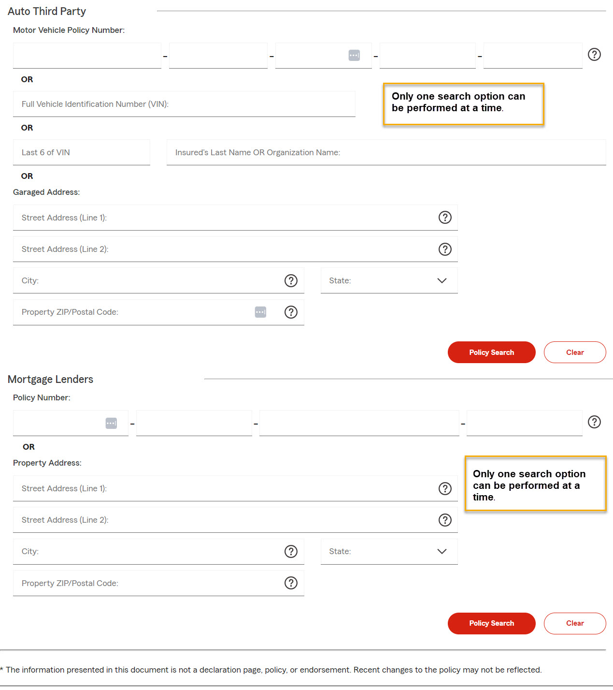

Policy Search screen allows you to locate specific insurance policies. The Search screen has different search options available based on Auto Third Party or Mortgage Lenders:

title
B2B | Policy Search
description
How to search in the Insurance Inquiry tool for a policy.